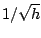
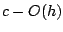
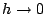

Additive Schwarz preconditioners, when a coarse grid correction is added, are said to be optimal for certain discretized PDE problems, in the sense that bounds on the convergence of iterative methods are independent on the mesh size. Cai and Zou [1] showed with an example that in the absence of a coarse grid correction the usual GMRES bound has a factor of the order of . In this paper we consider the same one-dimensional example (as well as a two-dimensional counterpart) and show that the behavior of the method is not well represented by the above mentioned bound. We use a different bound for GMRES from Simoncini and Szyld [2] and show that the relevant factor is bounded by , so that as , it approximates a constant. Furthermore, for a sequence of meshes the convergence curves are almost identical and the number of GMRES iterations needed for convergence has a very slow growth.
[1] Numer. Linear Algebra Appl. 9 (2002) 379-397.
[2] SIAM Rev. 47 (2005) 247-272.